WORDLE
Cree un videojuego inspirado en el famoso Wordle, con una caja en la que se almacenan las palabras a adivinar y se eligen de forma random, se utilizan diferentes funciones y bucles para su jugabilidad.
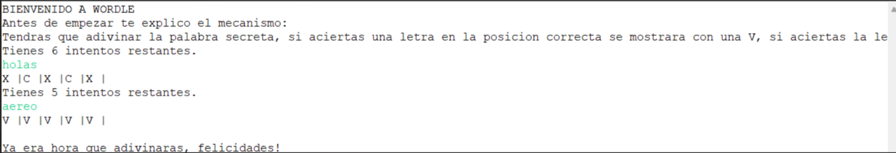GITLAB: Pulsa aquí
Ir a la pagina >>>LIGA SIMULADOR
En este programa simulamos por completo lo que seria una liga de futbol, con los 20 equipos de LaLigaSantander y todos sus jugadores, se lleva acabo resultados y una tabla de clasificacion donde estaran situados de acuerdo a los puntos obtenidos. Sumado a esto tambien podremos añadir o eliminar cualquier jugador de cualqueir equipo desde el apartado de gestion de plantilla.
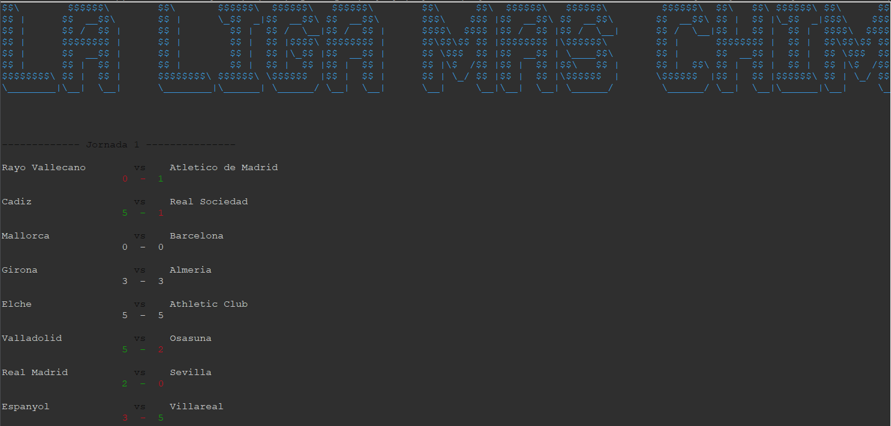 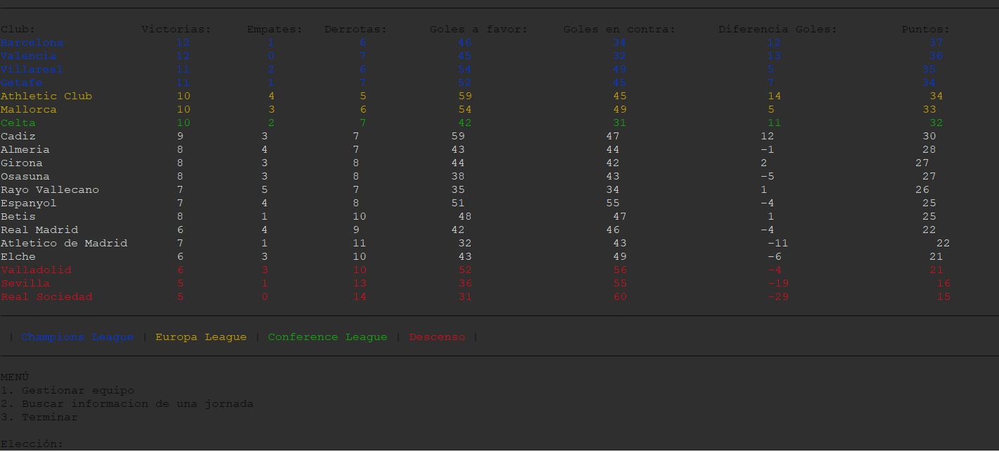GITLAB: Pulsa aquí
Ir a la pagina >>>MANEJO DE BASE DE DATOS
En este programa controlamos una base de datos la cual se basa en suministrar tanto empresas como proveedores. La funcionalidad de este es que podremos añadir, asignar, o eliminar empresas y proveedores para llevar un control mas facil de los mismos.
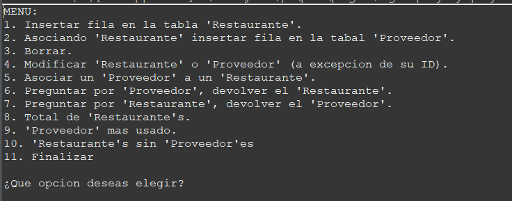 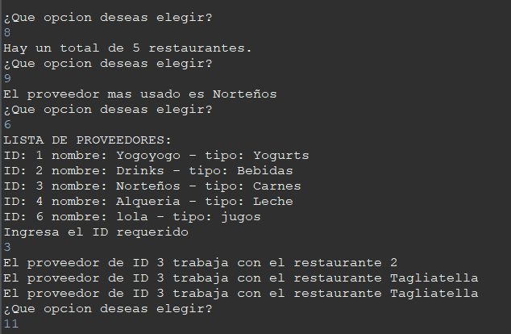 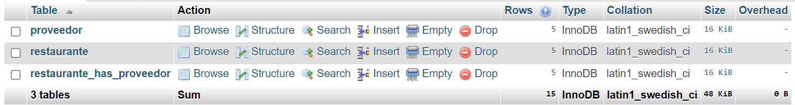GITLAB: Pulsa aquí
Ir a la pagina >>>MANEJO DE FICHEROS
En este programa controlamos un fichero, extrayendo los datos y enfocandonos en la utilizacion de fechas.
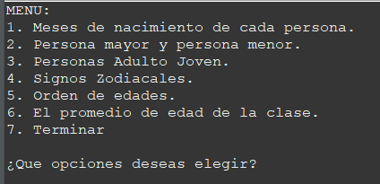 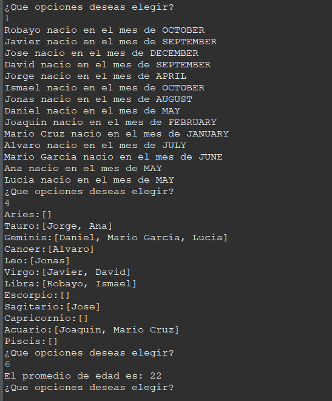 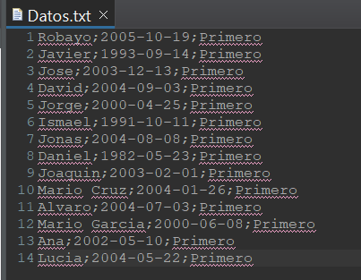GITLAB: Pulsa aquí
Ir a la pagina >>>PYTHON
En este programa podremos ver algunos ejercicios con el lenguaje de Python.
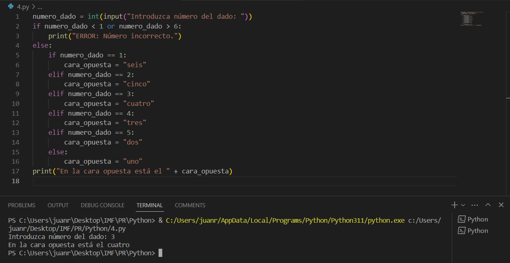 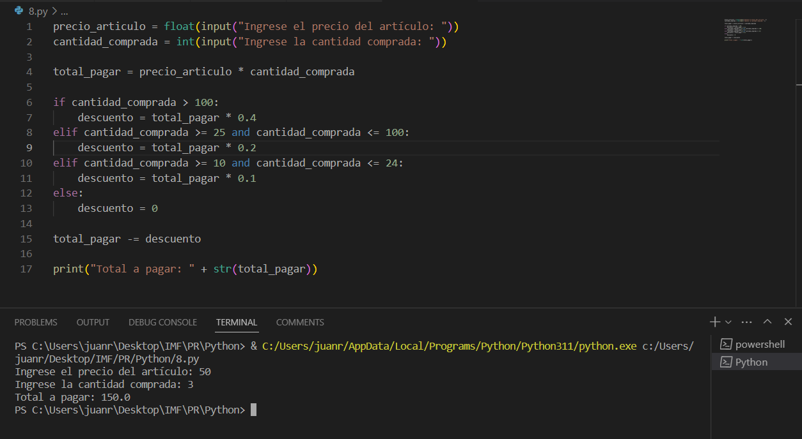GITLAB: Pulsa aquí
Ir a la pagina >>>C++
En este programa podremos ver algunos ejercicios con el lenguaje de C++.

GITLAB: Pulsa aquí
Ir a la pagina >>>TEST DE PERSONALIDAD
En este programa realizamos un formulario con la tematica de "¿Que personaje de IMF eres?" con la participacion estelar de JavaFX.